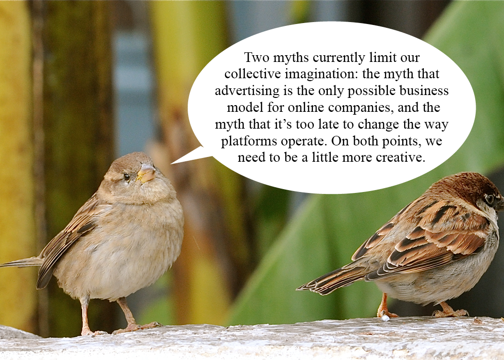

My Website Is A Shifting House Next to A River of Knowledge. What Could Yours Be?
TCI x Are.na's Library of Practical and Conceptual Resources,
Laurel Schwulst encourages all artists to create and cultivate websites.
What is a website?
For the past handful of years, I've been teaching courses about interactive
design and the internet.
I teach within art departments at universities, so we learn about the internet's
impact on art—and vice versa—and how technological advance often coincides with
artistic development.
In class, we make websites. To do this, we learn the elemental markup and code
languages of the web—HTML, CSS, and some JavaScript.
However, sometimes after the semester is over, I receive perplexing emails from
students asking, “So how do I actually make a website?”
This sparked my own questioning. “What is a website, anyway?” It's easy to forget.
Today there are millions of ways to make a website, and the abundance is daunting.
But at its core, a website is still the same as ever before:
A website is a file or bundle of files living on a server somewhere. A server is
a computer that's always connected to the internet, so that when someone types
your URL in, the server will offer up your website. Usually you have to pay for a
server. You also have to pay for a domain name, which is an understandable piece
of language that points to an IP. An IP is a string of numbers that is an address
to your server.
Links (rendered default blue and underlined—they're the hypertext “HT” in HTML)
are the oxygen of the web. Not all websites have links, but all links connect to
other webpages, within the same site or elsewhere.
But my students already know this! So when they ask me about actually making a
website, they are referring to a website in the world … today.
It's healthy to acknowledge today's web is much different than the web many of us
grew up using. So when they ask how to make a website (despite having already
“learned”), they are alluding to the technological friction and social pressures
that often come along with creating and maintaining a website in 2018.
Although they may seem initially accommodating and convenient to their users,
universally popular social media sites—like Facebook, Instagram, Snapchat, and
Pinterest—are private companies that prioritize advertising above their users'
needs. Their users' happiness is not the primary focus, so it's perfectly normal
for you to feel anxiety when using or even thinking about social media. In this
ge of digital cacophony dominated by these platforms, no one is looking out for
you… but you. It makes perfect sense, then, when individuals tell me they want
their website to do the job of “setting the record straight” on who they are and
what they do.
However, clarity is one of many possible intentions for a website. There are other
legitimate states of mind capable of communication—a surprising, memorable,
monumental, soothing, shocking, unpredictable, radically boring, bizarre, mind-
blowing, very quiet and subtle, and/or amazing website could work. You also
need not limit yourself to only one website—as perhaps you'd like to confuse or
surprise with multiple.
My favorite aspect of websites is their duality: they're both subject and object
at once. In other words, a website creator becomes both author and architect
simultaneously. There are endless possibilities as to what a website could be.
What kind of room is a website? Or is a website more like a house? A boat?
A cloud? A garden? A puddle? Whatever it is, there's potential for a self-
reflexive feedback loop: when you put energy into a website, in turn the website
helps form your own identity.
Why have a website?
Today more than ever, we need individuals rather than corporations to guide the
web's future. The web is called the web because its vitality depends on just
that—an interconnected web of individual nodes breathing life into a vast network.
This web needs to actually work for people instead of being powered by a small
handful of big corporations—like Facebook/Instagram, Twitter, and Google.
Individuals can steer the web back to its original architecture simply by having
a website. I think artists, in particular, could be instrumental in this
space—showing the world where the web can go.
Artists excel at creating worlds. They do this first for themselves and then,
when they share their work, for others. Of course, world-building means creating
everything—not only making things inside the world but also the surrounding world
itself—the language, style, rules, and architecture.
This is why websites are so important. They allow the author to create not only
works (the “objects”) but also the world (the rooms, the arrangement of rooms,
the architecture!). Ideally, the two would inform each other in a virtuous,
self-perfecting loop. This can be incredibly nurturing to an artist's practice.
To those creative people who say “I don't need a website,” I ask: why not have a
personal website that works strategically, in parallel to your other activities?
How could a website complement what you already do rather than competing or
repeating? How can you make it fun or thought-provoking or (insert desired feeling
here) for you? How can the process of making and cultivating a website contribute
to your approach?
A website can be anything. It doesn't (and probably shouldn't) be an archive of
your complete works. That's going to be dead the moment you publish. A website,
or anything interactive, is inherently unfinished. It's imperfect—maybe sometimes
it even has a few bugs. But that's the beauty of it. Websites are living, temporal
spaces. What happens to websites after death, anyway?
What can a website be?
The web is what we make it
While an individual website could be any of those metaphors I mentioned above, I believe
the common prevailing metaphor—the internet as cloud—is problematic. The internet is
not one all-encompassing, mysterious, and untouchable thing. (In early patent drawings
depicting the internet, it appears as related shapes: a blob, brain, or explosion.) These
metaphors obfuscate the reality that the internet is made up of individual nodes: individual
computers talking to other individual computers.
(image_6_sky_and_cloud)
The World Wide Web recently turned 29. On the web's birthday, Tim Berners Lee, its creator,
published a letter stating the web's current state of threat. He says that while it's
called the “World Wide Web,” only about half the world is connected, so we should close
this digital divide.
But at the same time, Berners Lee wants to make sure this thing we're all connecting to is
truly working for us, as individuals: “I want to challenge us all to have greater ambitions
for the web. I want the web to reflect our hopes and fulfill our dreams, rather than magnify
our fears and deepen our divisions.”
(image_7_birds_in_sky)
“Metaphor unites reason and imagination,” says George Lakoff and Mark Johnson in their book,
Metaphors We Live By (1980). “Metaphors are not merely things to be seen beyond. In fact,
one can see beyond them only by using other metaphors. It is as though the ability to comprehend
experience through metaphor were a sense, like seeing or touching or hearing, with metaphors
providing the only ways to perceive and experience much of the world. Metaphor is as much a
part of our functioning as our sense of touch, and as precious.”
Instead of a cloud, let's use a metaphor that makes the web's individual, cooperative nodes
more visible. This way, we can remember the responsibility we each have in building a better
web. The web is a flock of birds or a sea of punctuation marks, each tending or forgetting about
their web garden or puddle home with a river of knowledge nearby.
If a website has endless possibilities, and our identities, ideas, and dreams are created and
expanded by them, then it's instrumental that websites progress along with us. It's especially
pressing when forces continue to threaten the web and the internet at large. In an age of
information overload and an increasingly commercialized web, artists of all types are the
people to help. Artists can think expansively about what a website can be. Each artist should
create their own space on the web, for a website is an individual act of collective ambition.
------------------------------------------------------------------------------------------------
To accompany this essay, I've created a channel on Are.na called “Sparrows talking about the
future of the web.” There you'll find a handful of quotes from essays, also linked, that informed
this piece.

image_8_Tim_Berners_Lee
Laurel Schwulst
Designer, Artist, Writer